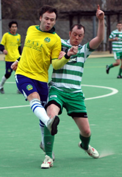

|
Big Circus, Sun 12th March. A windy afternoon in the mountains near Hon Atsugi saw Shane take on the high flying Kanto Celts. With player manager Riaz Donaldson and 3 other regulars missing it was a make shift team that Shane fielded which included a couple of debuts. Big Circus however seemed an appropriate venue for The Celts considering the size of their squad and management.
The strong wind blowing down field dictated that the coin toss would be key, the Celts having won opted to start with the gale. The Celts started the game favourites, 10 straight wins, talk of promotion with games to spare and genuine league ambitions. The Celts then, although wind assisted, seemed surprised with the Shane resistance. It was hardly surprising however as Shane had only conceded 3 goals in 7 league games before this tie. The Celts fizzed a few balls across the Shane box , a couple of timely tackles were required (one in particular by debutant Tom), but the clearest chance of the half fell to Paul James, the much applauded striker of Shane’s last game. Lurking at the back post he was found unmarked but he could not steer his effort on target.
At 0-0 at half time Shane felt an upset might be on the cards, however the wind seemed to lose its vigor in the second half. The tie could have gone either way in an end-to-end half, with both teams attacking, neither keeping possession for long, but a winner proved elusive. The Celts had the better chances, hitting the bar from a header and the striker with the goal at his mercy seemed to scuff his shot on a counter attack. Shane defended resolutely without creating too many clear-cut opportunities, but always looked dangerous and as a result the Celts never threw men forward for fear of being breached themselves. The Shane debuts namely Kura and Tom more than filled in for the missing regulars, Andy as stand in goalkeeper coped admirably, Satoshi up front added zip and ideas, but the Shane defence of Pete x 2, Tom Bentley and Rob again provided a solid backbone to a spirited Shane performance. The Saitama Jets were the real winners then as it ended honours even at 0-0. Finally a thank you to the referee for stepping in at short notice.
Match reporter: Peter McGill.
|